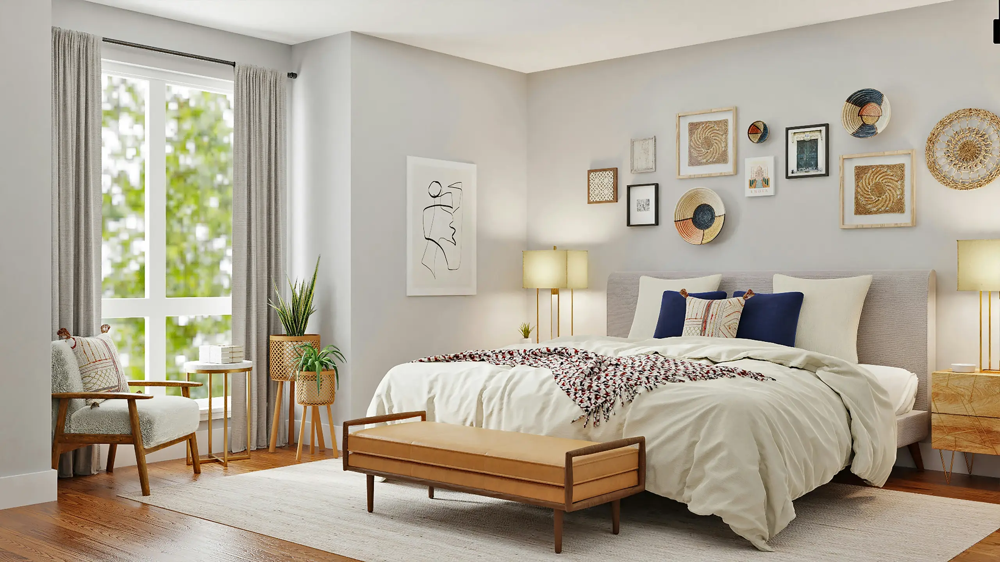
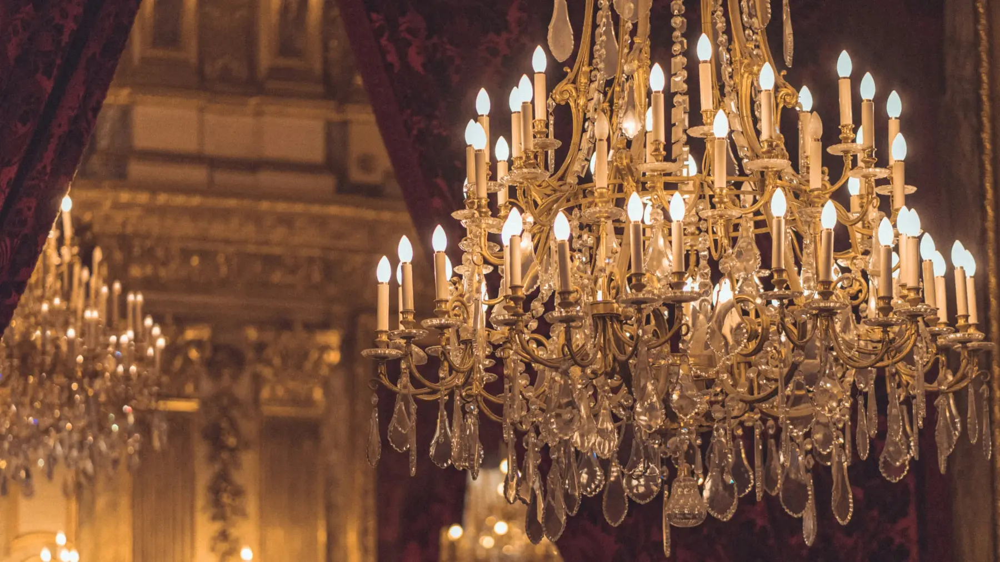

It's the little things that make a home a home.
Home décor in India has long been a luxury for the few. Chandeliers, lakh-worth furniture, aesthetics kept out of reach. We disagree.
It's the soap dispenser, the bath rug, the jar on your countertop. Small choices that quietly transform a space. We exist to make those possible for everyone.

"Have nothing in your house that you do not know to be useful, or believe to be beautiful." William Morris
Every room we have built in 3D. Step into any of them.
You should not need a budget of five lakhs to make your space feel beautiful. Urban Nest introduces affordable luxury that uplifts the everyday, one intentional object at a time.